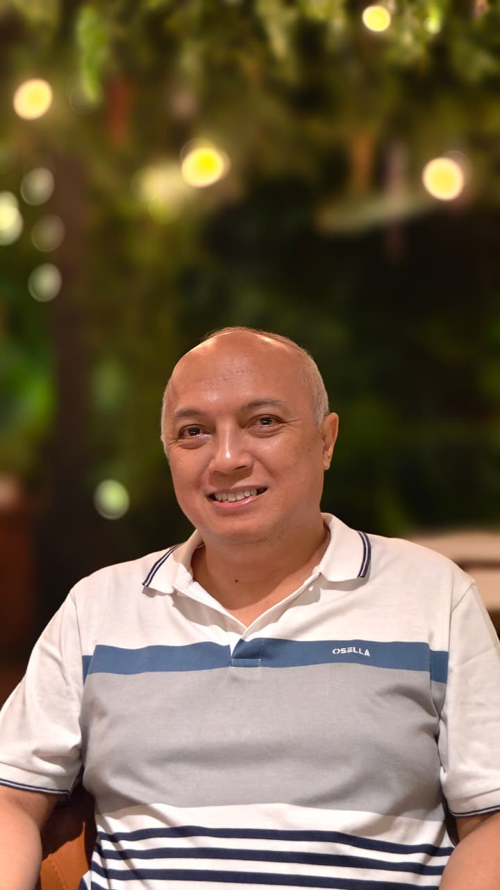

Professor of Language Education and Research Methodology

Saya seorang profesor di bidang pendidikan bahasa dan metode penelitian. Saya telah menulis belasan buku di bidang tersebut, melakukan banyak penelitian, dan menerbitkan artikel di jurnal ilmiah. Saat ini saya bekerja sebagai dosen tetap di Fakultas Bahasa, Universitas Ma Chung, Malang.
Buku "Meneliti itu Tidak Sulit" (2015).
Buku "Penelitian Kualitatif itu Mengasyikkan" (2023).
Nama Jurnal, Volume, Nomor, Tahun.
Deskripsi singkat atau abstrak satu-dua kalimat mengenai fokus temuan atau metode penelitian yang Anda gunakan dalam artikel ini.
Nama Jurnal, Volume, Nomor, Tahun.
Deskripsi singkat mengenai kontribusi artikel ini terhadap bidang pendidikan bahasa atau metodologi.
Anda dapat menghubungi saya melalui email resmi di: atis86@gmail.com